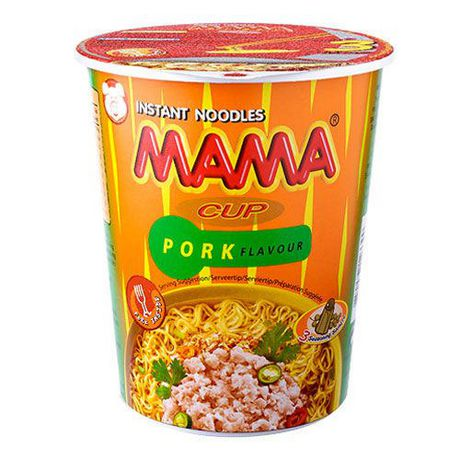
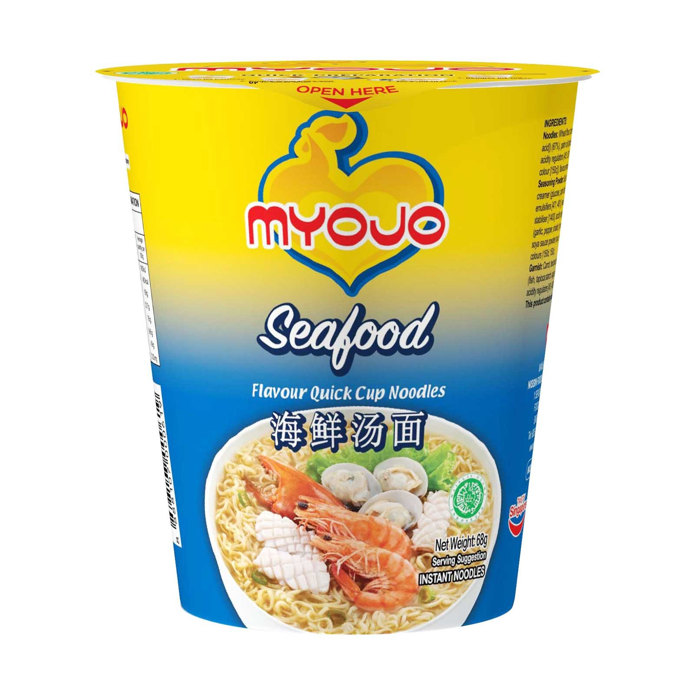
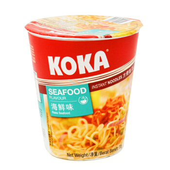
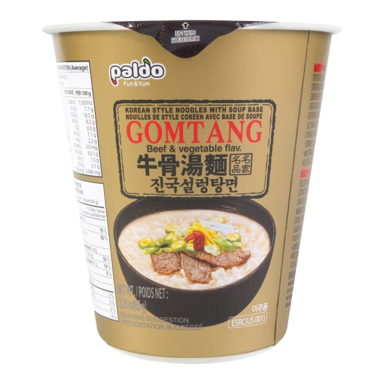
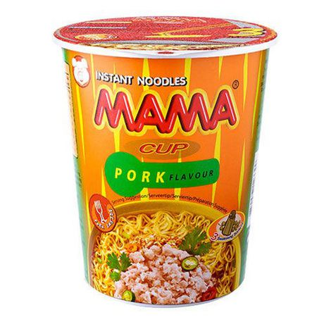
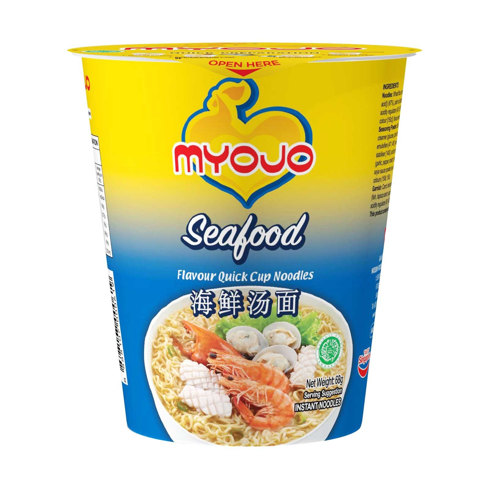
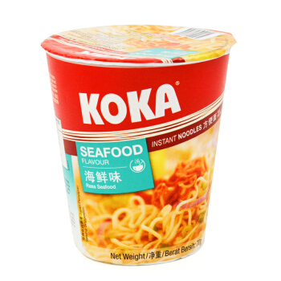
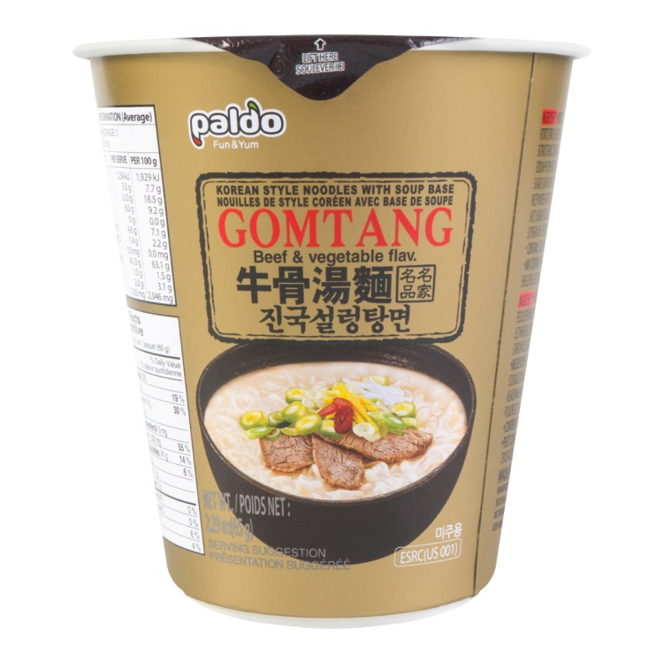
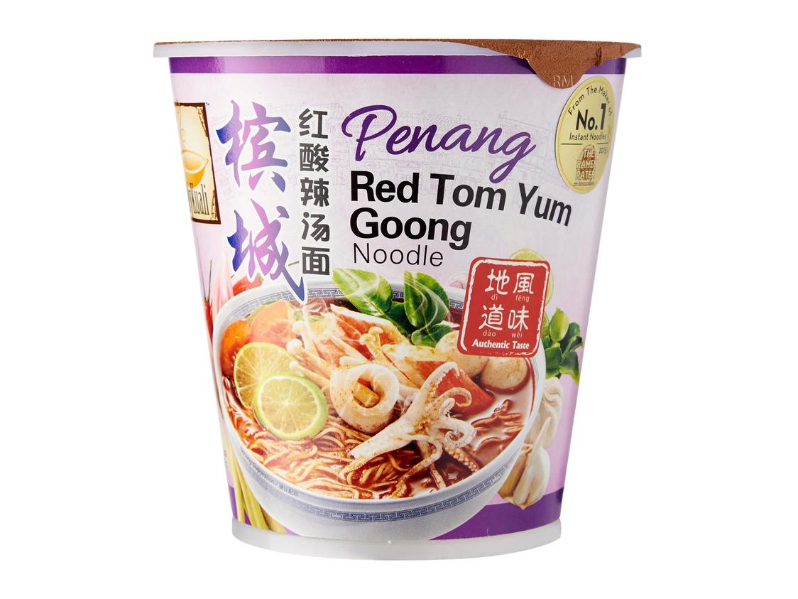
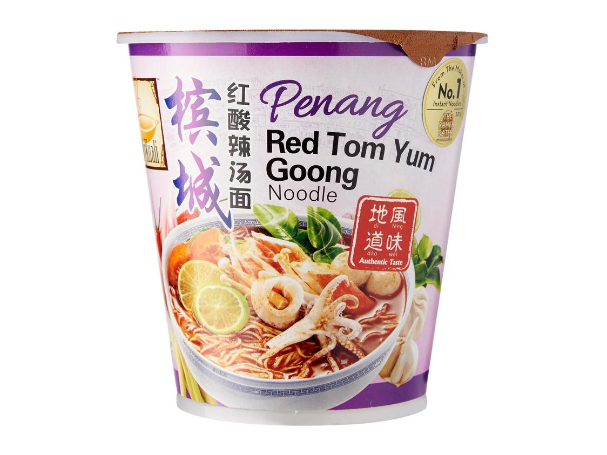

Numbers of Review Each Brand of Ramen Received

My project is about ratings and the review different brand of ramen around the world have and I would find out what countries have the most reviews and highly rated ramen. Some big takeways from my project would be that Southeast Asia have a really big market in the number of Ramen brands they have.
The data was found on Kaggle by Aleksey Bilogur three years ago.

 







 


Overall Mykuali received the highest amount of stars out of the ten brands. Maruchan has the least amount of stars. Nissin, which has the most number of reviews received the average of 3.8. Therefore,the number of reviews ramen brandws received will does not establish a relationship with their star ratings.